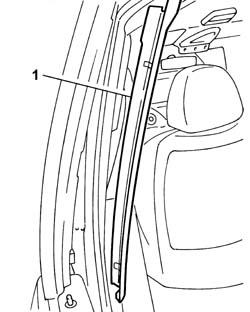
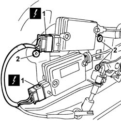
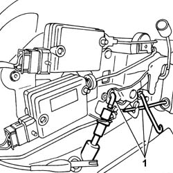
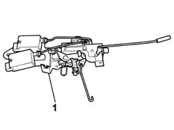

7020N20 MOTOR CATCH ASSEMBLY ONE OF SLIDING SIDE LOCK LEFT OR RIGHT R R
- Path
- Procedures > 70 FITTINGS > 7020 LOAD COMPARTMENT DOORS > 7020N SLIDING SIDE DOOR CENTRAL LOCKING > 7020N20 MOTOR CATCH ASSEMBLY ONE OF SLIDING SIDE LOCK LEFT OR RIGHT R R
- Kind
- repair procedure (removal / refitting; the operation number is the code)
- Applies to
- all engines; all production periods
- Interactive page
- https://sloeber94.github.io/elrnDB-fUlss/en/#/179007743
Applies to: all engines; all production periods
 Removing
Removing
 Refitting
RefittingOp. 5530B56 BATTERY DRIP TRAY COVER - R.R.
- Disconnect the negative battery terminal.
1. Release the pillar trim from the retaining clip.
2. Remove the sliding side door front pillar trim.

Applies to: all engines; all production periods
Op. 7050A90 REAR SEAT (ONE) - R RE - REPAIR WITH SEAT REMOVED
Op. 7020D32 SLIDING SIDE DOOR INTERIOR OPENING HANDLE/ESCUTCHEON (INTERIOR) - R.R.
Op. 7020C30 SLIDING DOOR INTERIOR PANEL - R+R
Op. 7020C02 SLIDING SIDE DOOR WATER PROTECTION - R.R.
1. Disconnect the electrical connections for the door opening and closing actuators.
2. Using a drill fitted with a suitable helical point, remove the rivets fastening the rear door opening device.

Applies to: all engines; all production periods
1. Release the rear side door opening and closing rods.

Applies to: all engines; all production periods
1. Remove the rear door opening device.

Applies to: all engines; all production periods
Refitting
Removing- Fit the rear side door interior handle.
- Attach the rear side door opening and closing rods.
- Connect the electrical connections for the door opening and closing actuators.
Op. 7020C02 SLIDING SIDE DOOR WATER PROTECTION - R.R.
Op. 7020C30 SLIDING DOOR INTERIOR PANEL - R+R
Op. 7020D32 SLIDING SIDE DOOR INTERIOR OPENING HANDLE/ESCUTCHEON (INTERIOR) - R.R.
Op. 7050A90 REAR SEAT (ONE) - R RE - REPAIR WITH SEAT REMOVED
- Fit the front pillar trim.
- Attach the front pillar fastening clips.
- Connect the negative battery terminal.